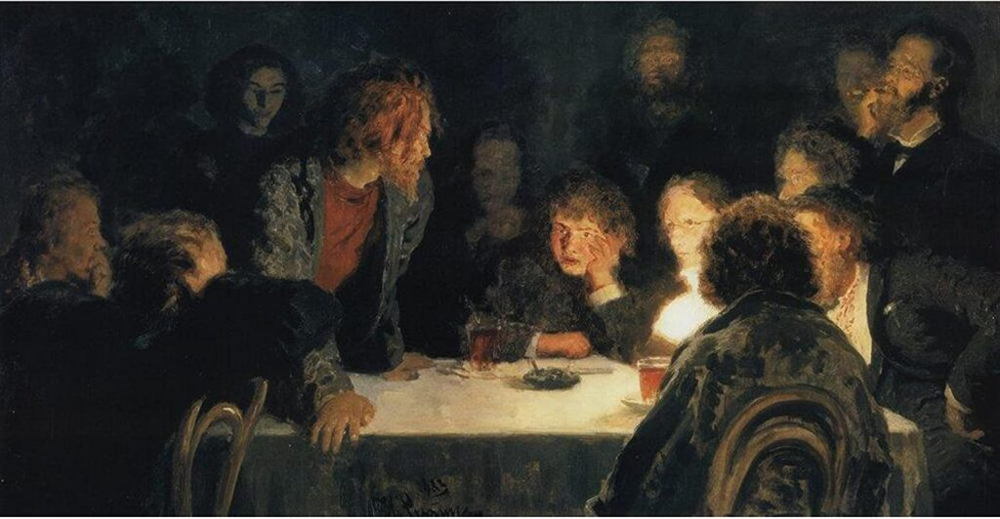
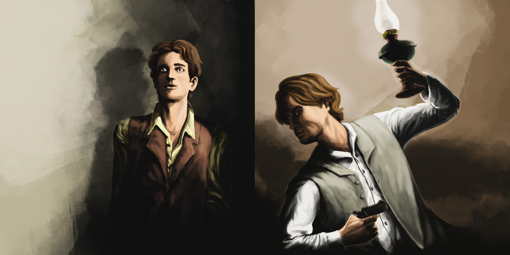
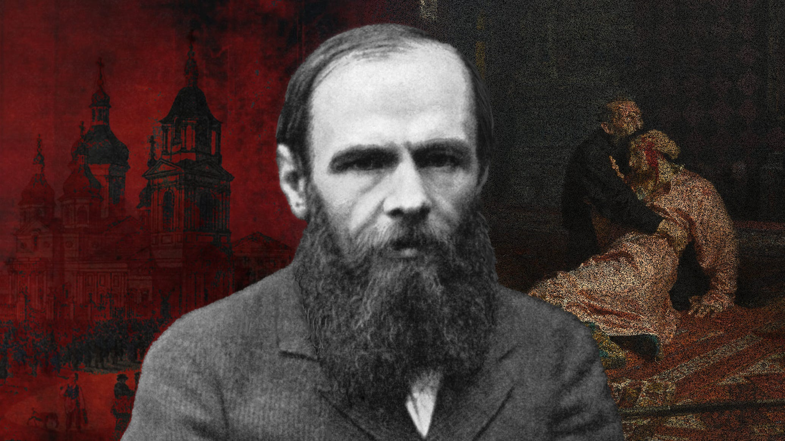
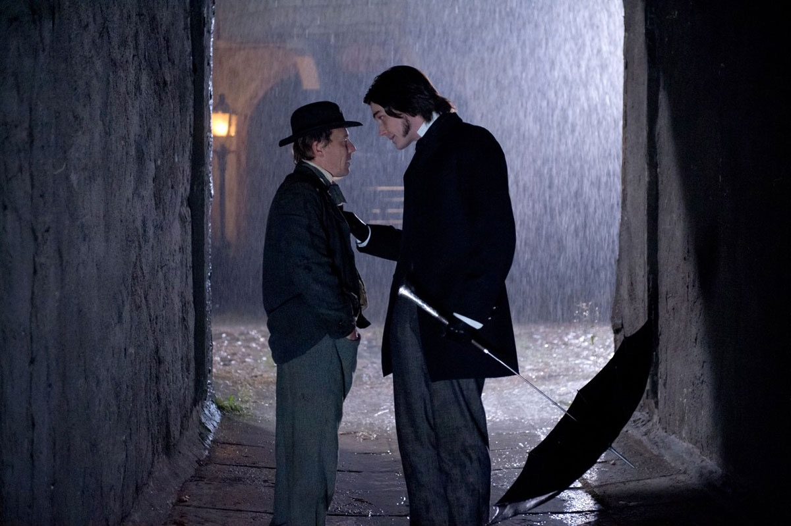

Biesy
CZĘŚĆ PIERWSZA - Rozdział I, II, III
Tytul powieści - biesy to były z dawnej slowianskiej mitologii demony, które wplywaly na ludzi i ich wypaczaly, sprawialy, ze stawali się zli, doprowadzali do aktow profanum, tyle ze w przeciwieństwie do chociażby chrześcijańskiego Lucyfera, biesy bywaly rozproszone i każdy człowiek mój mieć swojego własnego, unikalnego - biesa.
Widze tutaj takie rozbicie symboliki biesów jako wlasnie mitologicznego, tak jak opisałem wyżej, również psychologicznego, jako stany graniczne postaci, jako ich ekstremum, to wszystkie te myśli, które doprowadzać mogą bohaterow do szaleństwa. Ale to tylko hipoteza, najpierw musi się akcja rozwinąć.
Ewentualnie mogę jeszcze się dopatrywać biesów w pryzmacie społeczeństwa - konkretni bohaterowie mogliby przedstawiać archetyp jakiejś negatywnej cechy, z która sa utożsamiani, chociażby Stiepan Trofimowicz daje wrazenie wlasnie "biesa" nieumiarkowania, upraszania sobie zycia i unikania problemów etc.
Co do postaci...
Barbara Pietrowna Stawrogin - zdecydowanie aktualny core powieści, ma realnie najwieksza władze, tak naprawdę pociąga za sznurki poprzez pieniądze, które sluza jej za srodek, niekoniecznie za cel. Ma realny wpływ na wiekszosc postaci, stara się zbudować swoje imperium oparte na konwenansach i mniemaniu o jej wspanialosci, podczas gdy w rzeczywistości może być tez tylko stara, bardzo samotna kobieta.
Stiepan Trofimowicz Wierchowienski - wolny duch, co tu dużo mowic, wydaje mi się, ze Tolstoy gdy pisal postac Stiwy Oblonskiego bardzo się na nim wzorowal. Nie martwi się szczególnie o jutro, popelnia blad za bledem, nie ma az tak silnych, określonych wartości, tak naprawdę po prostu zyje z dnia na dzień rozkoszując się życiem. Trzeba mu oddac, ze jest w tym wszystkim sympatyczny, a fakt, ze się z początku nie chciał zgodzić na ożenek z Dasza, pokazuje, ze jego kompas moralny nie jest tak mocno zachwiany, przynajmniej na ten moment.
Mikolaj Wsiewolodowicz Stawrogin - Syn Barbary, na ten moment postac totalnie enigmatyczna. Nie wiemy o nim za wiele, jest swego rodzaju wręcz mitem, każdy o nim wie ale te informacje sa na swój sposób niepelne i niepewne. Ma budzący kontrowersje zyciorys, pojedynki, skandale, dziwne zachowania etc. Czuc, ze jego powrot może być pewnym motorem napedowym, pchającym dalsza fabule.
Daria Pawlowna (Dasza) - postac troche tragiczna bo bez własnego zdania. Faktem jest, ze musi ulegac w pełni Barbarze, która ma nad nia kontrole, potem pewnie będzie podobnie ze Stiepanem, chociaż tamten przynajmniej nie ma tak silnie zarysowanych sklonnosci do tego typu wzorcow zachowan, Dasza na ten moment jest troche nijaka ale zdaje się być sympatyczna. Tutaj tez, widze podobieństwo do Darii, siostry Kitty z Anny Kareniny Tolstoya.
Piotr Stiepanowicz Wierchowienski - Syn Stiepana, postac, która podobnie jak Mikolaj może być calkiem ciekawa. Również enigmatyczna, wiemy, ze podrozowal tu i tam, robil to i tamto ale nie znamy konkretów, wiemy, ze "wydaje się mily i prosty", ja z kolei mysle, ze może być jedna z kluczowych postaci w przyszłości, zapewne jednym z tych wlasnie biesów. Może upodlony przez Mikolaja, który zdaje się, już od dawna posiada jednego z owych "biesów"?
Szatow - brat Darii, postac jakby zywcem wyjeta z innych dziel Dostojewskiego, jak zbrodnia i kara - biedny studencik(byly), ktory nie wie co ze soba począć, klasyk.
Liza - Postac, która zdaje się mieć potencjal, ma dosyć stanowczy charakter, chociaż znamy ja na ten moment tylko z opowieści, może mieć w przyszłości duza role, chociaż to tylko mój strzal.

Rozdział IV, V
Dochodzi do swoistej kulminacji napięcia, spowodowanego spodziewanym przyjazdem Mikolaja. Ludzie zaczynają panikować, pojawia się więcej niepewności. Ukazana została lepiej postac Kapitana Lebdiekina. Coz, jest to klasyczna postac zagubiona. Nie wiedziała co ze soba począć, nie wierzyla w samego siebie, zapadla się pod wpływem alkoholu i własnej niemocy. Zebrala po ulicach, traktowala z pogarda swoja siostrę. Zyl w pewnym przeświadczeniu o realnej dozie władzy nad nia, bil ja, ponizal. Jego siostra z kolei jest jak dotad najbardziej tragiczna postacia w Biesach. Ona nie jest traktowana jak człowiek, tylko jak zwierzecie, gorzej nawet - przedmiot. Traktuja ja tylko jako punkt zaczepny, kontrast dla wydarzen i czynow innych ludzi, nastapila realna miara dehumanizacji, co tez pokazuje stan moralny owczesnego dla autora społeczeństwa.
Doszedłem też oczywiście do wniosku, że narrator jest całkowicie nieobiektywny – mówi wszystko z własnej perspektywy, która jest często niepewna, przekłamana. Potrafi zmieniać zdanie i przedstawiać daną postać w całkowicie innym świetle, w zależności od informacji, jakie zaczerpnął na jej temat. Najlepiej to chyba widać na przykładzie Mikołaja. G-ow traktuje go jako istotę niemalże boską. Całe jego otoczenie stworzyło taki szum informacyjny na jego temat, że trudno odróżnić, co jest realnym faktem, a co wyobrażeniem narratora.
Pojawienie się Mikołaja w domu Barbary było przełomowe, zresztą nie tylko z jego powodu – zdaje się, że fakt ujawnienia się syna Stiepana, Piotra, miał równie duże, jak nie większe znaczenie. Podczas gdy Mikołaj w tym wszystkim jest takim „słońcem”, wokół którego wszyscy orbitują niczym satelity – przyciągającym, aczkolwiek obojętnym – to Piotr zdaje się być totalnym przeciwieństwem. Narrator widzi go jako osobę niepośledniejszą, aczkolwiek również niewybitną – krytykuje jego zmieszanie, uznaje, że Piotr gra komedię, do tego niezbyt wybitnie. Ja z kolei uważam, że Piotr wszystkich oszukuje – on to wszystko robi na pokaz specjalnie, uwypukla wady i problemy, z jakimi mierzył się jego ojciec, dobija go na każdym kroku, jest bezlitosny, po prostu w sposób, jaki nikt tego nie dostrzega. Ja w nim widzę osobę żądną krwi i zemsty za stare przewinienia, po prostu taką, która sprytnie manipuluje i widzi całość planszy.
Koniec części pierwszej też świetny. Pokazał mocną stronę charakteru Szatowa. Rzeczywiście, ten z pozoru młody, wycofany eks-student okazał się jedną z najodważniejszych i najbardziej znaczących postaci w całym tym zawirowaniu. Nie okazał lęku, zrobił coś, co pewnie z jego perspektywy należało zrobić. Mi się wydaje, chociaż to bardzo subiektywne, że on w tym wszystkim nie oszukuje. Jest szczery w tym, co robi, i kiedy kieruje się emocjami, są to z reguły emocje szlachetne.
Druga sprawa to fakt, że zadziałał w ten sposób na tak z pozoru obojętnego Mikołaja – ten nie odpowiedział w żaden emocjonalny sposób, tylko jakby się wycofał. Świadczyć to może o dwóch rzeczach: albo Mikołaj ma coś bardzo poważnego na sumieniu, może jest świadomy tego, jak potraktował siostrę Lebiadkina i tego szczerze żałuje, uważa, że zasługuje na ten cios? Albo to też objaw jego obojętności – postanowił nie reagować, gdyż po co? To jednak jest mniej prawdopodobne. G-ow opisuje, że Mikołaj też ma tendencje do gniewu – to pierwsza sprawa, chociaż nic nieprzekreślająca, w końcu narrator nie jest obiektywny. Druga sprawa to fakt, że wcześniej, co wyłapałem, nie podał Szatowi dłoni przy przywitaniu – gest drobny, ale ile teraz znaczący w perspektywie ostatnich wydarzeń.
CZĘŚĆ DRUGA - Rozdział I, II
Rozdziały te przybliżają nam trochę postaci Mikołaja, Szatowa, Lebiadkina, Piotra i Marii, chociaż wyłapałem też niuans na temat Lizy i Daszy. Mikołaj swoimi działaniami potwierdził moje przekonania. To człowiek, u którego na próżno szukać planu i głębszych motywacji. To czysty nihilista, który robi rzeczy dla innych niezrozumiałe; to niszczyciel schematów, który swoim zachowaniem dokonuje destrukcji na salonach. Nie znaczy to jednak, że jest bezmyślną maszyną – dalej złości się, kontempluje, analizuje, robi to jednak w sposób niezrozumiały dla większości społeczeństwa.
Dalej – Szatow. To postać tragiczna w swoim systemie. Jest przerażony tym, co się dzieje, widzi te wszystkie biesy i wie, że nie może nic zrobić, w żaden sposób zareagować. Próbuje jeszcze przemówić do rozsądku Mikołajowi, ale to jak walka z wiatrakami. Jest skazany na porażkę, cierpi z tego powodu, ale i cóż z tego? Doceniam i szanuję jego opór. To postać skrajnie dostojewszczacka – myślę, że to wręcz ucieleśnienie autora w książce.
Lebiadkin to oczywiście totalna porażka – postać, która zaprzepaściła szanse na swoje życie, na swój sposób po prostu się poddała. Nie ma dla niej ratunku i raczej już nie będzie. Woli podporządkować się schematom, wreszcie samemu chaosowi w postaci Mikołaja, żeby tylko nie brać odpowiedzialności za własne decyzje. To postać stracona – o ile nie osiągnie jakiejś głębokiej przemiany, co do której w mojej opinii nic nie wskazuje, to ta postać wkrótce stanie się martwa; jeżeli nie dosłownie, to w kontekście społecznym i moralnym.
Akcje Piotra i jego wpływ na inne postacie całkowicie potwierdziły mój wcześniejszy osąd. To jest gracz – osoba, która nie cofnie się przed niczym w dążeniu do wytyczonych sobie celów. Manipuluje, wykorzystuje, pogardza wreszcie innymi jednostkami, które są podatne na jego wpływ. Jest zrównoważony, przenikliwy i inteligentny, ale całkowicie pusty od środka. Nie ma w sobie żadnych skrupułów czy moralnych hamulców. Jest jednak bardziej przewidywalny niż Mikołaj, gdyż kieruje się chłodnym racjonalizmem, nie chaosem.
Liza to postać, która również posiada swojego biesa. Ona również pogardza Marią, po prostu przykrywa wszystko powierzchowną fasadą w postaci uśmiechów, dużych oczu, ogólnego zadowolenia i miłych słów. Chce w osobach postronnych wywołać uczucie komfortu, gdy z nią rozmawiają, co zresztą jest skuteczne – widać to po reakcjach narratora. W rzeczywistości ona również pogardza, również potrafi być bezwzględna, po prostu na swój, bardziej subtelny sposób.
Dasza z kolei jest swoistą antytezą dla tych bohaterów. Ona w tym wszystkim wydaje się najbardziej szczera, bezstronna i bezinteresowna. Dlaczego pojawia się tak rzadko? Otóż zdaje się być mało ciekawa, prawdopodobnie z pozycji narratora nie wnosi nic istotnego do wątków, podczas gdy stanowi pewną kotwicę. Pokazuje, że świat nie jest skrajnie zły; wypycha nas z pesymizmu ontologicznego, z patrzenia w głębię w rejony bardziej przybrzeżne. Jej „brak biesa” mógłby stanowić o braku charakteru, jest jednak przeciwnie – to wszystko stanowi o jej sile, która nie podlega nawet takim próbom i zagadnieniom jak biesy salonowe we wszystkich ich odmianach, od Stiepana aż po Piotra i Mikołaja.
Akcja rozwija się. Wiem, że zaraz ma nastąpić pojedynek, który pewnie również zredefiniuje moje podejście do niektórych postaci. Na ten moment w książce mamy do czynienia z chaosem informacyjnym, gdyż sam narrator nie do końca potrafi przetrawić, co się dookoła dzieje – pewnie również przez fakt, że ma niepewne informacje i niepełne zdolności analityczne, by ogarnąć całość wydarzeń. Niemniej groźba wisi w powietrzu i kulminacja wydarzeń będzie musiała mieć jakiś wybuch. Ktoś zostanie zraniony, pewnie ktoś umrze – takie ciśnienie nie schodzi powoli, ono wybucha.

Rozdział III, IV
Tekst stanowi bezpośrednie rozwinięcie myśli przewodniej dwóch głównych „winowajców” powieści. Ukazuje nihilistyczną postawę Mikołaja wobec świata. Jego niecelne i „na pokaz” strzały są bezpośrednim dowodem na stanowisko bohatera wobec rzeczywistości. Pokazuje to jednak też pewną bolesną prawdę: Mikołaj zbudował sobie ten system całkowicie nieświadomie. On obraża, lekceważy, wreszcie odrzuca wszystkie konwenanse, ale robi to całkowicie podświadomie. Później, gdy przychodzi moment analizy, burzy się, złości i przestaje rozumieć, skąd bierze się wynikowa jego zachowań.
Na swój sposób stał się więźniem własnych przekonań, co czyni z niego postać tragiczną. Oczywiście taka odmienność tworzy alienację – mało kto jest w stanie go zrozumieć (jeśli w ogóle), choć budzi on fascynację społeczeństwa, a przede wszystkim „salonów”, które nie do końca są świadome źródła tej fascynacji. Tworzy to pewną bańkę oczekiwań wobec młodzieńca, który z kolei za nic ma to wszystko, zmierzając w swój własny, bliżej nieokreślony kierunek. Powstaje dysonans, który z pewnością będzie musiał w pewnym momencie wybuchnąć. Ciekawy jest też wątek Daszy, która zdaje się jako jedyna być szczera wobec Mikołaja, rozumieć jego alienację i go wspierać. Mimo to, ze względu na liczne przeszkody, trudno uznać, by ta relacja miała prawo bytu na dłuższą metę.
Postać Gaganowa to prześmiewczy obraz starego, zbyt uwrażliwionego nurtu. Zdaje się, że autor pokazuje tutaj hiperbolę, w której bohater czuje się tak znieważony, że żąda satysfakcji i nic nie jest w stanie odwieść go od tego pomysłu. Mikołaj, stanowiąc kontrę dla tego stanu ducha, samym swoim istnieniem jeszcze mocniej podburza dogmaty romantyków, co powoduje samonapędzający się efekt domina.
Z drugiej strony mamy Piotra. On robi to samo co wcześniej, tylko intensywniej: podburza, niszczy, udaje głupca, podczas gdy w rzeczywistości układa własną planszę z pionkami. Zabawny jest kontrast, w którym Julia myśli, że ma wszystko pod kontrolą i wywiera nieunikniony wpływ na bohatera (którego postrzega jako „zbyt nadpobudliwego i zafascynowanego swoją ideą”), kiedy to Piotr robi dokładnie to, co chce. Widać to zresztą po jego stosunku do gubernatora – znalazł już na niego kilka „haków” i powoli snuje nić, która oplata całą gubernię.
Podsumowując, widzę w Piotrze i Mikołaju dwie strony tej samej monety. Jest to swoiste rozwinięcie, a wręcz kontra dla Bazarowa (biorąc pod uwagę stosunek Dostojewskiego do Turgieniewa), ukazująca ekstremum. Autor widocznie uznał Bazarowa za postać „zbyt lekką” i w swoich bohaterach pokazuje rzeczywisty, destrukcyjny wpływ ich ideologii na społeczeństwo. Są nihilistami, którzy nie boją się burzyć porządku, unieważniać tradycji i wreszcie – zabić samego Boga.
Wniosek z postępowania Piotra, choć z perspektywy czasów Dostojewskiego może nie był tak oczywisty, teraz zdaje się jedynym możliwym. Nietzsche mocno nam to rozjaśnił, mówiąc wprost: w miejsce Boga trzeba wstawić człowieka. Nie może istnieć luka systemowa. Mikołaj jest tu wynoszony na piedestał, bo to on ma stanowić „centrum” – pierwowzór nowego nadczłowieka, który może rządzić światem bez udziału sił wyższych. To on, będący wcześniej słońcem, ma stać się pierwszym z ludzkich bogów. Dlatego też został wytypowany na lidera grupy, o której wspomina Piotr.

CZĘŚĆ TRZECIA, EPILOG
Czas na ogólne wnioski dotyczące całej książki, wszystkich postaci, ich symboliki itd.
Mikołaj Stawrogin. Myślę, że rozumiem tę postać trochę inaczej niż większość. Czy jest on studium absolutnego nihilizmu w starciu z rzeczywistością? Oczywiście. Czy należy go potępiać? Nie. Mikołaj jest postacią tragiczną, bo jest więźniem własnych przekonań. Większość jego czynów nie jest podyktowana rozsądkiem, nie wypływa nawet z jego uczuć – jest to po prostu część sprawcza jego systemu, nad którym nie ma kontroli. On nie jest z zasady zły, jest zagubiony. Podjął masę decyzji obiektywnie potwornych, jednak zrobił to nieświadomie. Taka pobłażliwość może być ryzykowna, ale szczerze wierzę w to, że był on więźniem własnego systemu. Nie posiadał wolności. Dopiero jego ostatnie działanie – jego samobójstwo – jest pierwszym przejawem własnej woli i decyzji. Ciekawy jest kontrast z Kiryłowem, który pragnął osiągnąć to samo. Autor jakimś cudem sprawił, że jedna postać, kierowana tymi samymi pobudkami, zrobiła to w sposób wręcz należyty (co jest kontrowersyjne), a druga popełniła fatalny błąd w ocenie swojej sprawczości.
Kiryłow. Jego opiszę jako drugiego, bo jest silnie powiązany z pierwszym poprzez ideologię. Kiryłow uznał, że szczyt człowieczeństwa, który jest jednocześnie odzwierciedleniem twarzy Boga („człowiek-bóg”), to najwyższa kontrola nad własną wolą. Bohater ten to po części odzwierciedlenie mojego sposobu na trwanie, jednak z wnioskami odwróconymi o 180 stopni. Podczas gdy ja uważam, że manifest woli można objawić poprzez trwanie, w treningach, w rozwoju osobistym i wreszcie w afirmacji życia mimo jego trudów, tak uważam, że Kiryłow był zbyt przelękniony życiem. On, który nie potrafił wykazać się w starciu z gorzkimi realiami życia, wybrał inny akt woli. Zdecydował się na samobójstwo, które sprawia, że stał się panem własnych czynów. Jest to jednak sprawstwo przekłamane – zrobił to ze strachu, nie z siły, co ukazuje go w tragicznym świetle. Jest godny współczucia; gdybym miał możliwość, pozostałbym otwarty na jego spojrzenie i gdyby poprosił, chciałbym takiemu bohaterowi pomóc. Jest antytezą tego, o czym pisał Nietzsche w kontekście nadczłowieka. On jest ślepym zaułkiem nihilizmu, bez przyszłości.
Piotr Wierchowieński. Kolejna postać tragiczna, ale w całkiem inny sposób. Był on jednocześnie geniuszem, jak i największym głupcem w całej tej historii. Uważał, że zburzenie wszystkiego sprawi, że będzie można na nowo wybudować lepszy świat. Problem w tym, że jego ideologia była ślepym punktem. Był krótkowzroczny. To prawda – przebiegły i odważny, ale jego plan nie miał żadnego podparcia. To był czysty chaos, niczym nieskrępowany, który rozrósł się do rozmiarów, gdzie musiał sam siebie zdusić, bo nie mógł istnieć w znanym nam świecie. Nie ukrywam – mimo moich przekonań nie mógłbym mu współczuć ani nie chciałbym mu pomóc. Nie gardzę nim jako takim, ale chciałbym się odizolować od takich postaci. Są szkodliwe i w niczym niepotrzebne mi do życia. Jako postać jest jednak świetny – daje dużo do zrozumienia i uświadamia mi istnienie niektórych archetypów, których warto unikać.
Stiepan Trofimowicz. Więzień własnej głowy. Był święcie przekonany, że jest wielkim mesjaszem, który za głoszenie prawdy musi się ukrywać. Wierzył we własną sprawczość i nie brał pod uwagę możliwości, że nic nie znaczy w świecie. Od początku do końca jego postać była grecką tragedią – ba, nawet sam wszystko układał tak, żeby to jak dramat wyglądało. Nie można go w pełni traktować poważnie, co jest chyba najbardziej tragiczne. On też zmarł ze swoich własnych, na dobrą sprawę, pobudek. Po prostu jego system w końcu nie wytrzymał i padł, niezdolny do zrozumienia świata, gdyż posługiwał się niewłaściwym narzędziem. To tragiczne, że nawet w śmierci, która przecież uszlachetnia, nie da się go traktować jako postaci prawdziwej. Sam sprowadził na siebie uprzedmiotowienie.
Barbara Stawrogin. Despotka. Chciała mieć wszystko pod kontrolą, nie znosiła sprzeciwu, była chciwa i nie chciała nic wypuścić z rąk. To przecież właśnie doprowadziło do tego, że straciła wszystko. Nie jest mi jej szkoda. Dostała to, na co zasłużyła. Podczas gdy u innych postaci można szukać ratunku w postaci ich ideologii, ona zwyczajnie była złą kobietą.
Liza i Maurycy. Postacie, które nie były ludźmi jako takimi – one były ideami obsesji. Maurycy, zapatrzony w Lizę jak w obrazek, nie widział jej wad. Różnił się od niej tym, że brał na siebie rolę męczennika i potrafił jej wszystko przebaczyć. Jednak nie zrobił tego jak Karenin w Anie Kareninie, który przełamał własny system z powodu szlachetności – Maurycy robił to z powodu brzydkiej obsesji. Liza z kolei, obsesyjnie zapatrzona w Mikołaja, nie miała żadnych hamulców. Potrafiła poświęcić swój wizerunek, swój charakter i wreszcie swoje życie dla chwili. Była uzależniona od chwilowej dopaminy, była chaosem i też spotkał ją chaotyczny koniec.
Szatow. Postać, która chyba najbardziej odzwierciedla Dostojewskiego. Uważam, że ta postać nie miała prawa bytu. Zabrzmi to brutalnie, ale był zbyt miękki na życie w prawdziwym świecie. Jego idee – może i piękne – nie nadawały się jednak do niczego. W świecie idealnym, w swoistej utopii, mógłby stać się jednym z wzorców, na bazie których inni by się inspirowali. Jednak w zderzeniu z brutalnością prawdziwego świata musiał ulec zniszczeniu.
Lebiadkin i Maria. To chyba najbardziej tragiczne postacie w całej książce. Kapitan stał się niewolnikiem alkoholu. Nie potrafił podjąć żadnej decyzji, gdyż był uzależniony. Był wykorzystywany, śmiano się z niego i nikt nie traktował go poważnie. Budzi we mnie cholerne współczucie, gdyż nikt nie zasługuje na taki los. W przypadku Marii jest jeszcze gorzej – ona została całkowicie uprzedmiotowiona i to nawet nie była jej wina. Fakt, że była chora, sprawił, że nikt jej nie traktował jak człowieka. Nie miała nawet szansy. I co za to dostała? Została zarżnięta jak zwierzę, wraz z bratem. Tragiczny los, zgroza.
Karmazinow. To był bezpośredni, satyryczny atak na Turgieniewa. Karmazinow był pyszny, arogancki, przekonany o własnej wyższości, niekochający ojczyzny i zwyczajnie momentami tępy. Muszę tutaj potępić Dostojewskiego. Uznał Turgieniewa za zbyt miękkiego, a jego postać Bazarowa za niedorzeczną, bo niewystarczająco brutalną. Dostojewski wpada tutaj w mocną dychotomie, nie pozwalając nawet zaistnieć myśli, że przecież zarówno Bazarow, jak i jego postacie mogą istnieć w naszym świecie. Turgieniew nie jest wcale winny – on pokazuje po prostu inny kontekst tej samej opowieści.

Podsumowanie ogólne
Podsumowanie ogólne. Uważam Biesy za jedną z najciekawszych, ale i najtrudniejszych książek, z jakimi miałem kiedykolwiek styczność. Masa postaci, wszystkie są innymi symbolami, każdy ma w sobie innego biesa. Autor, cytując Pismo Święte i wzmiankę o demonach, daje nam bezpośrednio znać o swojej opinii na ten temat. Pokazuje nam przestrogę w formie metafory i uważa, że to wszystko nie może istnieć bez Boga.Co do samego autora, mam mieszaną opinię. Z jednej strony potępiam go całkowicie, gdyż wszystkie te rzeczy – jego opis Karmazinowa, te postacie itd. – to odzwierciedlenie jego duszy. To człowiek grzeszny i pełen niepokojących cech. Jednak trzeba go pochwalić za to, że potrafił to wszystko pokazać. To tak, jakby rozebrał się do naga przed światem i przedstawił swoje własne lęki. To właśnie ten akt największej odwagi i woli, o której pisał w postaciach Mikołaja i Kiryłowa.Muszę go też jednak skrytykować, gdyż chociażby w postaci Marii ukazuje się jego hipokryzja. Ostrzega nas przed tym nihilizmem, samemu zabierając wszystko jednej ze swoich postaci. To, jak potraktował Marię – obdarł ją z szat, zabrał umysł, sprawczość i wreszcie wolę – to domena, którą posługują się szaleńcy jak markiz de Sade. Nie mogę go za to pochwalić. Książka jest też o tyle świetna, że to jedna z niewielu pozycji, w której nie masz bezpiecznej kotwicy. Tutaj nie ma dobrych wyborów, jesteś wpuszczony w świat epidemii, gdzie wszyscy są już zarażeni. Jest to przez ten fakt trudne do czytania, ale też niezwykle budujące.